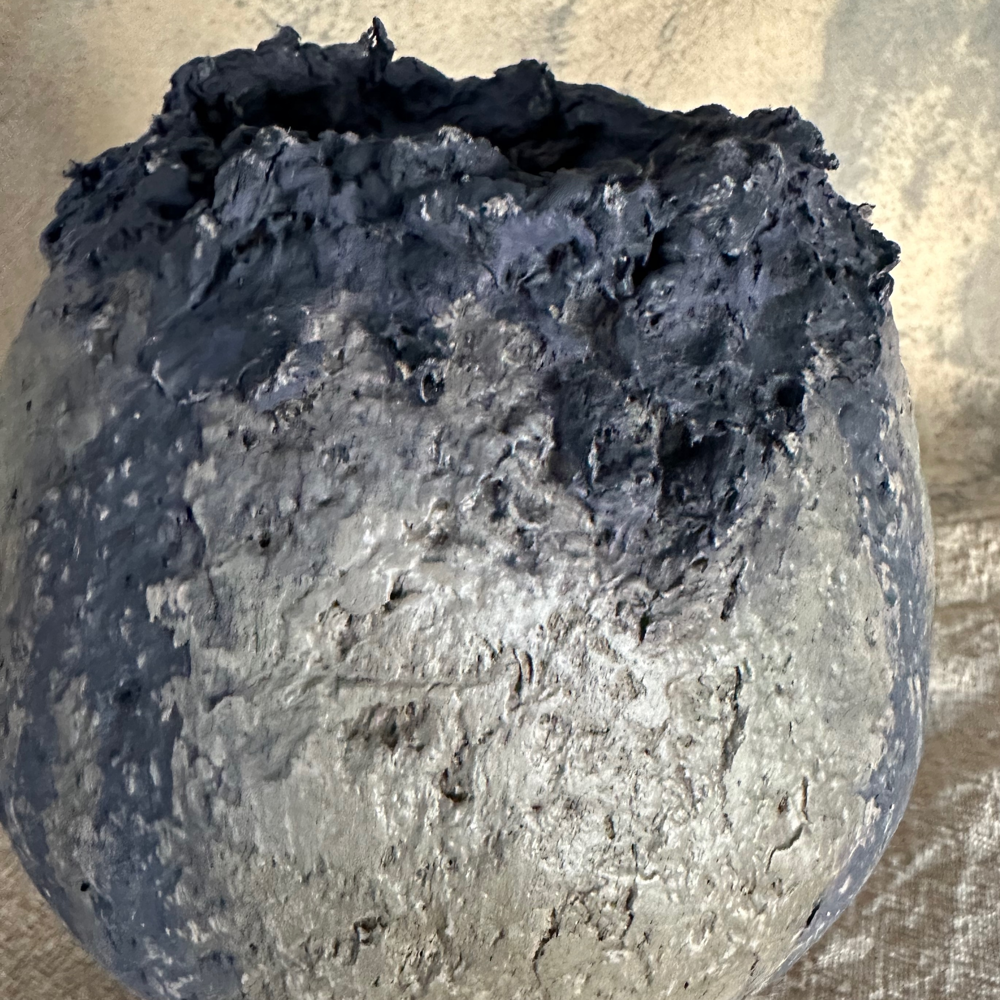
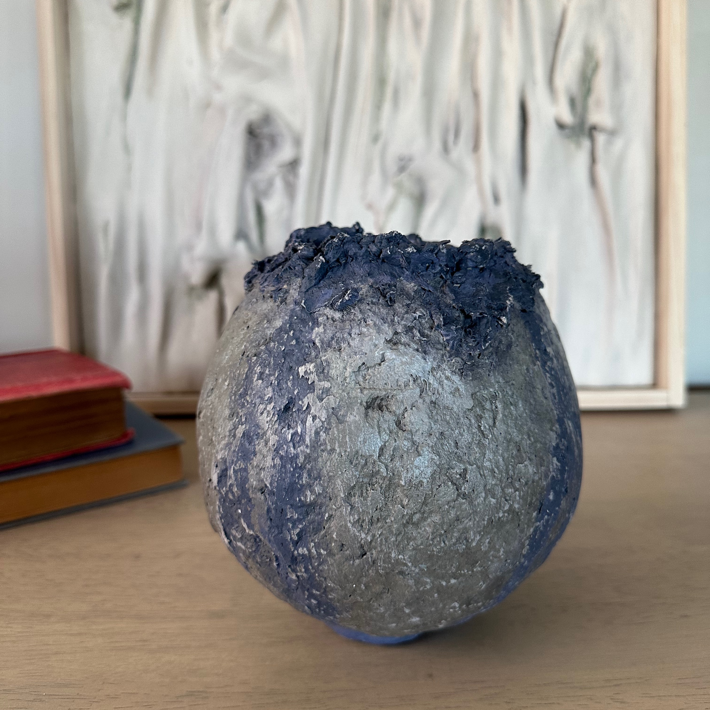
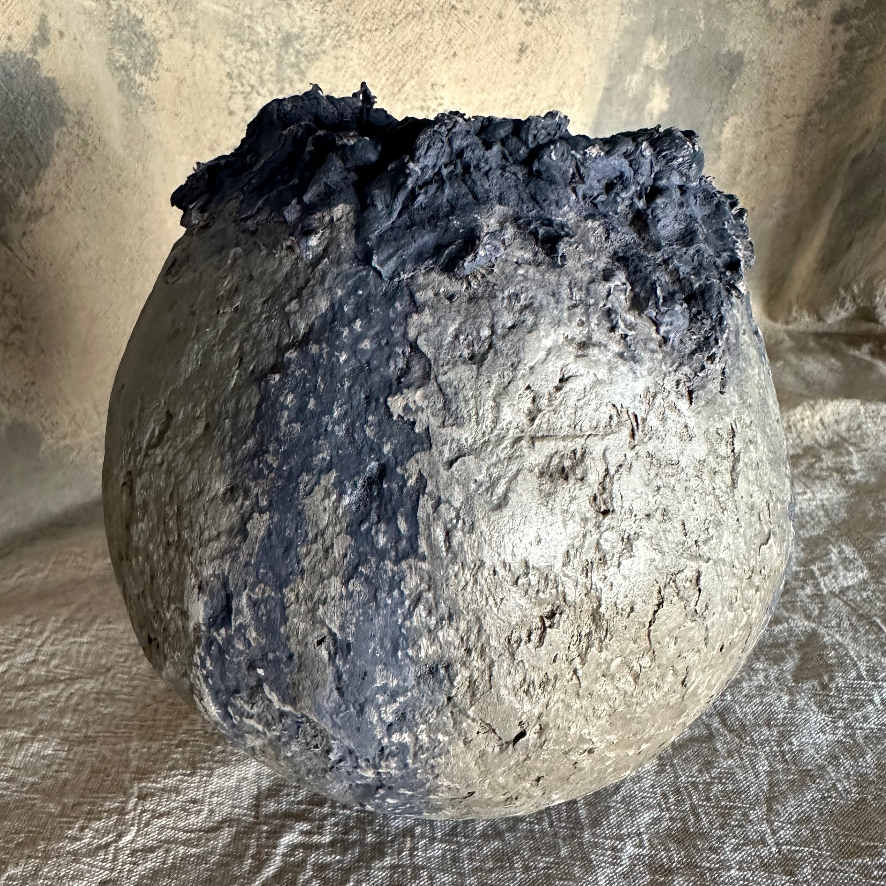

Cinder Vessel
Mixed media sculptural vessel | Plaster, paper, acrylic paint | 160 mm diameter × 160 mm high | Original 1/1
AVAILABLE
$395 AUD
Enquire about this work


Cinder Vessel explores the beauty found in erosion, transformation and the traces left behind by time.
Its rounded, stone-like form is contrasted by a heavily textured, charred rim, creating the impression of an ancient vessel emerging from the ashes. Layers of weathered grey, muted blue and deep charcoal flow across its surface, revealing subtle fractures, irregularities and mineral-like textures.
Both raw and quietly refined, Cinder Vessel embodies the delicate balance between fragility and resilience that defines the Ash Collection.
Handcrafted as a one-of-a-kind sculptural piece, its distinctive form and surface cannot be replicated.
Additional views

